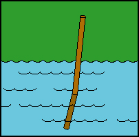

"Give me but one firm spot on which to stand,
and
I will move the earth"
Archimedes
The depth of a swimming pool always appears to be less
than it actually is. This effect is due to the refraction of
light rays as they traverse the boundary between water and air.
In the following graphic, the chest appears to be closer to the
surface than it actually is.
By using Snell's law and simple geometry it can be shown that
Spearfishing is particularly difficult due to the apparent depth
phenomenon !!
The discontinuous bending of a stick held partly in and partly
out of water is also a result of light refraction at the air-water
interface.

"Physics
is
like sex: sure, it may give some practical results, but that's not why we do it."
Richard Feynman.